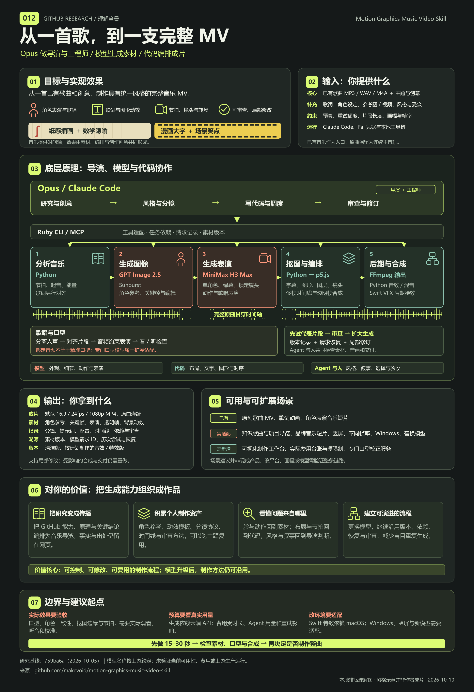

Skill + Opus
理解音乐与创意，研究风格，写 PLAN、提示词、分镜与代码，安排审查。先确认方向与预算，再扩大生成。
- 输入
- 歌曲、歌词、参考与创作约束
- 产出
- 制作计划、时间线、任务和审查判断
MUSIC → MATERIALS → MOTION
入口是已有音乐和创意，目标是完整音乐 MV。
Opus 做导演与工程师，图像／视频模型生成素材，代码按帧编排，工具链合成交付。

01 / WHAT IT DOES
点击环节，查看它处理什么、交付什么，以及由谁完成。
本地分析
从歌曲中估计节拍、起音与能量，给字幕、镜头和特效安排时间点。
已有歌曲；初始化后转换为可分析的音频。
节拍、时间／帧位置、能量等 JSON 数据。
节奏估计仍需试听校准，复杂变速或拍号需要适配。
INTERACTIVE / 看懂代码在做什么
这个 16 秒静音示意由原创 SVG 和网页代码绘制。切换角色、图形和光效，拖动时间轴，观察代码怎样控制布局、入场与节奏。
它说明合成分工，真实模型表演与最终风格请看下方两支作者样片。
SVG 角色替代模型素材；模拟 120 BPM，无真实音频或模型调用。
02 / MODULES & RESPONSIBILITIES
按职责梳理固定源码中的制作链。下面是研究归纳的模块分组，并非八个独立产品或八种模型。
理解音乐与创意，研究风格，写 PLAN、提示词、分镜与代码，安排审查。先确认方向与预算，再扩大生成。
初始化独立项目、准备环境、执行媒体工具与模型适配器。MCP 把宿主中的请求交给统一 Ruby 任务，保存配置和执行结果。
本地估计节拍、起音与能量。人声分离、转录和音效由对应适配器处理；歌词时间点与人声片段要另外对齐。
图像模型建立角色参考、关键帧和静态背景。H3 默认每段 5–15 秒，单角色、纯绿幕、锁镜头；多角色分别生成，在 p5 中相遇和合成。
从绿幕表演中分离角色，检查透明边缘、整个人物轮廓和脚底。角色素材与背景、字幕分开保存，便于局部修改。
场景代码直接绘制图形、文字和镜头变化，合成背景与角色。以整数帧和 cue 控制事件，让画面响应音乐与歌词。
Python 混合音效，Swift Core Image 加按帧特效，FFmpeg 拼接画面并编码。整曲保持一条连续主音轨，避免音频切段造成接缝。
保存素材版本、请求回执与审查记录，按 2 → 4 → 8 → 10 的批次上限推进。中断后查回执恢复；替换素材后重做受影响环节。
Ruby 管理批次和任务状态，真正的子 Agent 由宿主启动。审查文件、回执和缓存提供过程约束；实际画面质量与费用仍需核对。
03 / INPUT & OUTPUT
提供音乐并不意味着点击一次就自动完成。制作还需要创意确认、代表性素材试做、逐批审查和合成验收。
MP3 / WAV / M4A 附件或本地路径；原曲作为主音轨。
主题、情绪、故事、角色，或希望观众看到的内容。
帮助定位歌词、建立风格，沿用已有角色参考。
默认横屏 16:9、24fps；改变画幅或帧率需要实现与验证。
付费生成还需要 Fal 凭据与运行工具链。默认入口是提供歌曲。
默认 1080p MP4；保留清洁版，按计划制作音效／特效版。
角色参考、关键帧、表演片段、透明角色帧、背景与图形。
创意、分镜、提示词、时段、预算估算和审查记录。
任务依赖、素材版本、文件路径、模型请求 ID 与历次尝试。
可以定位到某个角色或镜头修改；受影响的合成与交付仍需重做。
04 / UNDER THE HOOD
Opus 也写提示词与场景代码、调用工具和审查；Ruby 执行具体任务。模型生成和确定性动画共同形成成片。点击职责看分工。
OPUS / 导演与工程师
理解歌曲与创意，研究视觉细节，写计划、预算、提示词与场景代码，调度工具和素材任务，检查结果并安排修订。
调度和审查机制有实现，审美质量仍需要 Agent 或人的判断。
生成单个角色、锁定镜头，再抠图放入代码场景。背景、字幕和镜头可以单独调整；角色参考按版本保存。
p5 在每帧绘制角色、图形与文字。节拍数据与歌词时间点决定入场、缩放和转场，Swift 为指定帧加入后期效果。
任务有依赖与审查状态；请求回执和素材上传按输入缓存。中断后先恢复已有请求，降低重复提交的机会。
全曲保留一条连续主音轨。代码可以精确安排画面时点，模型表演的动作与嘴型仍需逐段观看和听音。
SINGING / 口型到底怎么来？
视频适配器的 target_audio_url 用于绑定目标音频，不能单独证明逐音素精准口型。演唱镜头应匹配人声片段，避免靠重定时去追音乐。若需更稳定的专门口型处理，可新增模型适配器与审查步骤；它属于扩展方案。
05 / WHEN TO USE IT
以下是使用判断与创意示例，可切换查看所需输入和制作重点。新歌创作、口播转 MV、课程视频等还需增加相应入口与适配。
适合独立音乐人、原创歌曲发布、歌词动画和角色表演 MV。
“让一个纸感机器人在城市里寻找自己的声音。主歌克制，副歌加入跳跃的歌词和节拍图形。”
已有歌曲、歌词、视觉参考、预算与角色设定。
角色一致性、主歌／副歌差异、开场与高潮的表演和口型。
整曲 MV、清洁版、素材与可继续修订的制作记录。
AUTHOR EXAMPLES / REAL FRAMES
作者真实成片与实际播放截图。切换截图看构图，点击播放看动作、字幕与节奏如何配合。
人物特写与摆锤、积分符号、等号共用一个画面。统一的纸底和有限配色，让角色表演与知识隐喻形成同一种视觉语言。
播放时关注 人物表演、符号的位置变化，以及画面与歌词的呼应。
先用夸张人物、大字与警示条做漫画海报，再切到带新闻条和走势图的主播场景。视觉梗跟随内容变化，风格更喧闹、戏剧化。
播放时关注 表情与歌词、场景切换，以及大字出现的时机。
点击播放后连接 YouTube；无法加载时可打开原片。截图保存在本项目，可离线查看。已抽样观看，未做全片逐帧或口型评审。
WHO MAKES THE RESULT?
角色长相、画面细节、动作与表演很依赖模型；整支 MV 的效果还取决于代码编排和创作判断。这个库把这些环节组织成可修改的制作流程。
生成角色参考、姿态和表演片段。脸部、动作、口型或一致性出现问题，通常需要调整素材生成。
p5 按帧组织图层、字幕、镜头与转场；本地工具处理抠图、后期和合成。布局或节拍有问题，可以修改代码。
研究视觉参考、规划分镜、把歌词变成画面隐喻，选择素材并审查。相同模型也能做出不同风格的作品。
对你的价值 学会把模型素材组织成作品，并能定位问题、局部修改和复用流程；模型换代后仍可沿用这套方法。
分工依据上游工作流与源码；截图说明可见风格。未取得这两支样片的完整制作日志，不能仅凭成片确认每个元素具体来自哪个模型或脚本。
06 / WHAT IT MEANS FOR YOU
结合这个 GitHub 研究总库，最值得复用的是“如何组织生成、检查和修改”，再决定是否接入完整生产链。
把能力链路、架构关系和关键结论编排为音乐短片，适合项目导览与分享。事实与出处仍留在网页中，便于检索和更新。
统一输入、分镜、角色参考、逐帧时间线、审查和输出记录。换主题时复用流程，逐步建立自己的素材与动效库。
模型决定表演素材的质量；代码决定摆放、文字、节奏和合成。遇到问题时，可以定位到素材、时间点或布局，减少盲目重生成。
用 15–30 秒代表性段落比较视觉路线、模型表演与局部修改成本，积累可复用的角色和模板。先借鉴协议和状态记录，完整生产接入再评估环境、预算与质量。
增量价值是把素材变成可迭代的作品，并留下版本、依赖和审查记录。它没有训练新生成模型；同一套流程不会自动消除素材质量问题，收益仍需实际制片验证。
07 / WHERE TO TAKE IT NEXT
下面是建议方向；标签说明实现起点，未将建议当作已有功能。更换入口或输出场景，需要重新定义制作合同与验收。
从版本化角色参考、p5 文字／图形助手出发，积累固定主角、字幕方式和转场配方。
第一步把一组审查通过的参考与动效记录成模板。
默认运行链路按横屏 24fps 设计，需要一起调整坐标、裁切、安全区、时间线与输出尺寸。
第一步用一段短素材验证新画幅的整条合成链路。
核对 Ruby、Python 环境、字体路径和 Chromium。Swift Core Image 后期需要替换或交给 macOS 执行。
第一步先跑通本地分析、p5 渲染和 FFmpeg 合成。
沿用 Ruby 适配器结构，核对新模型的参考图、音频、时长与画幅 schema，再验证表演和抠图。
第一步新增一个模型适配器，做同一段表演的对照。
把计划、任务图、素材版本、审查和时间线放进网页；通过受控后端调用制作工具。
第一步先读取 manifests，做只读素材与状态浏览。
在计划估算之外增加实际用量记录、重试额度和提交前费用检查，核对供应商计费。
第一步把每次请求、估算和实际费用映射到同一任务。
多角色场景可沿用分别生成、p5 合成的已有方案；专用口型、接触动作和复杂遮挡需补模型适配、参考、遮罩与审查。
第一步先对一段演唱或互动做对照，验证嘴型和角色关系。
从 projects.json 和核验资料形成叙事、歌词、配音或音乐，再进入素材与编排阶段；记录每段文字与来源。
第一步给一个项目写 30 秒事实准确的脚本，与网页相互链接。
增加帧数、黑帧、文字安全区、素材缺失和版本检查；记录模型、提示词、用量与返工。审美与口型仍需观看。
第一步给一次试做建立可读的检查清单和费用记录。
建议起点先选一段 15–30 秒音乐，验证角色、时间线和合成效果，再决定是否制作整曲。
08 / EVIDENCE & BOUNDARIES
主要面向 Claude Code。工具链包含 Ruby、Node、Python、Chrome、FFmpeg 与 ImageMagick；Swift 特效要求 macOS。
作者给出约 3 分钟作品需约 30 美元 Fal 额度和约 300 万 Opus token 的经验值；总成本还需核算 Agent 用量与重试，不能当作报价。
角色一致性、边缘抠图和口型需要实际审查。节拍工具采用 80–180 BPM 搜索及四拍分组，复杂节奏需要校准。
云端生成会发送所选音频、图片与提示词。此研究网页仅做本地交互示意；未运行上游或执行付费生成。
模型名称来自固定源码：Opus 5.5、GPT Image 2.5 Sunburst、MiniMax H3 Max。2026-10-12 复核上游 main 仍为 759ba6a；未验证这些服务的当前可用性。本站部署的是研究网页，制作功能仍由上游及其工具链提供。